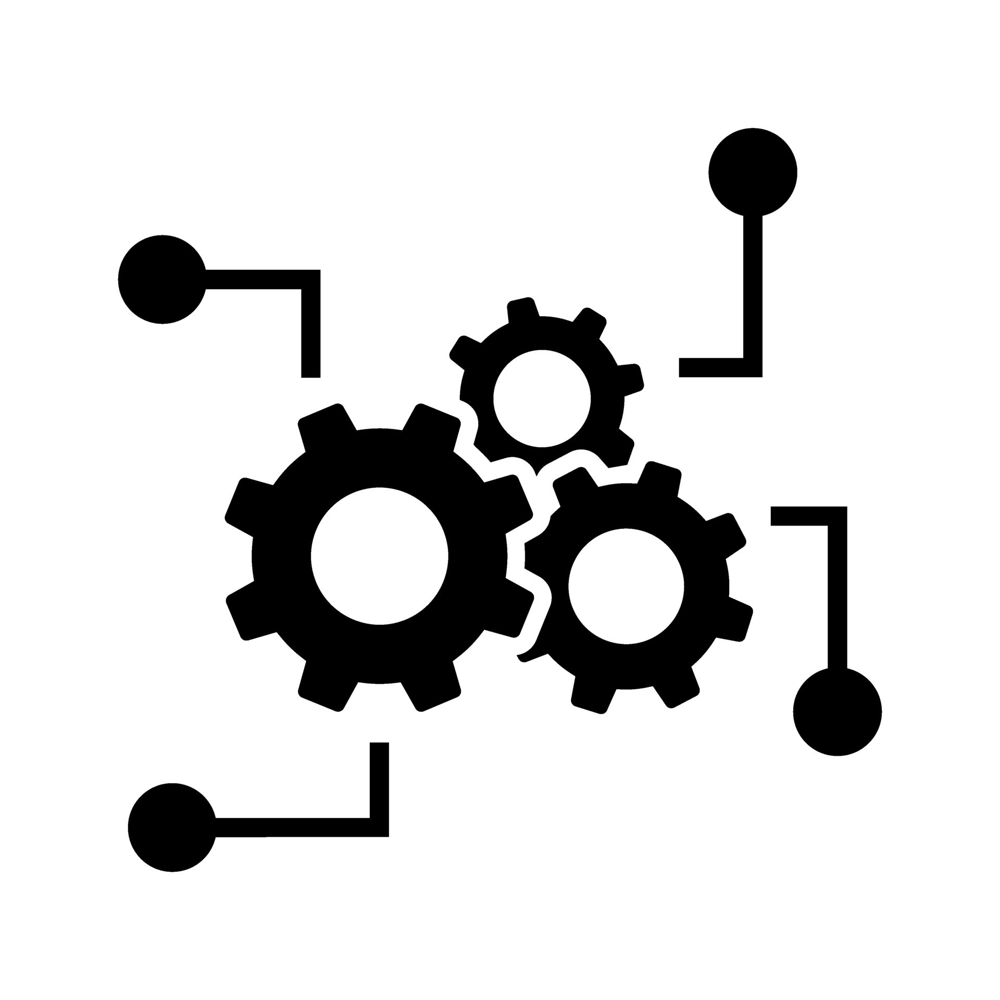

Installation
In dieser Woche haben wir viel über die Hardware des PCs gelernt.
Systeme
In den letzten drei Tagen haben wir echt viel über IT gelernt. Am ersten Tag ging es um VMs, also virtuelle Maschinen. Wir haben Windows und Ubuntu darauf installiert. Zuerst haben wir Windows von einem USB-Stick auf die VM geladen und installiert. Dabei mussten wir aufpassen, dass wir nicht den Cloud-Speicher verwenden, sonst hätte das nicht geklappt. Nach der Windows-Installation haben wir dann Ubuntu aus dem Internet heruntergeladen und ebenfalls in der VM installiert. Es ist interessant, verschiedene Betriebssysteme auf einem Computer laufen zu lassen, ohne sie wirklich installieren zu müssen. Am zweiten Tag haben wir uns mit dem BIOS und anderen wichtigen Themen beschäftigt. Das BIOS sorgt dafür, dass der Computer überhaupt startet, indem es prüft, ob alle Hardwarekomponenten richtig funktionieren. Wir haben auch das EVA-Prinzip besprochen, was für Eingabe, Verarbeitung und Ausgabe steht. Es beschreibt, wie Daten in einem Computer verarbeitet werden. Außerdem haben wir über ESD (elektrostatische Entladung) gesprochen. Das passiert, wenn man z. B. Elektronik anfasst und eine kleine elektrische Entladung entsteht, die die Bauteile beschädigen kann. Deswegen nutzt man Erdungsbänder, wenn man an Hardware arbeitet. Am dritten Tag haben wir uns mit verschiedenen Systemtools und wichtigen Tastenkombinationen beschäftigt. Wir haben gelernt, wie man mit systeminfo die Infos über das System anzeigen kann oder mit dxdiag.exe das DirectX-Diagnoseprogramm startet. Dann haben wir uns mit dem Taskmanager und der Datenträgerverwaltung beschäftigt.
Fazit
In dieser Woche haben wir mehr über PCs und ihre Software gelernt.